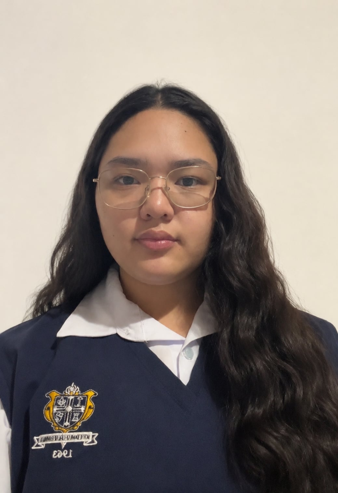

Who we are
About The Vomen's Voice
Our chosen issue
Our chosen issue is domestic violence against women, including physical, emotional, psychological, sexual, and economic abuse within the home or a relationship. Many women suffer in silence because of fear, threats, social pressure, or financial dependence. We chose this issue to raise awareness and affirm that every woman deserves to feel safe, respected, and protected.
Publication background
Our mission: To amplify women’s voices, promote safety and dignity, and encourage informed, compassionate action against violence. The Vomen's Voice is a student publication that advances this mission through English and Filipino features, news, columns, and campaign materials.
Publication name and branding
THE WOMAN’S VOICE / Tinig ng Kababaihan
The publication name represents women’s right to speak, be heard, and stand up for themselves. Our logo symbolizes strength, unity, empowerment, and freedom of expression. Purple represents strength and justice, while soft pink represents compassion and hope. Together, our name, logo, and colors affirm that every woman’s voice deserves to be heard.
The people behind the publication
Publication & video team
Meet the writers and production members behind The Vomen's Voice.
Mary Faith Lim Castro
Editor-in-Chief · Layout · Copyreader
Videographer · Kolum/Column Writer
Van Ferrer
Video Editor & Director · Layout
Feature Writer
Maria Yana Parungao
Actress
Ryle Matthew Savariz
Balita/News Writer · Actor

Alex Yumang
Script Writer · Editorial Writer · Copyreader